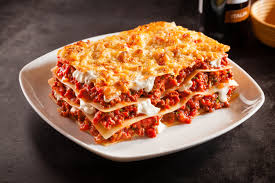

How to Cook Lasagna
Ingredients:

- ½ pound ground pork
- ½ pound lean ground beef
- ½ cup minced onion
- 1 (28 ounce) can crushed tomatoes
- 1 (8 ounce) can tomato sauce
- 2 tablespoons chopped fresh parsley, divided
- 1 clove garlic, crushed
- 1 ½ teaspoons dried basil
- 1 ½ teaspoons salt
- ½ teaspoon dried oregano
- ⅛ teaspoon white sugar
- 1 (16 ounce) package lasagna noodles
- 1 pound small-curd cottage cheese
- ¾ cup grated Parmesan cheese
- 3 large eggs
- 2 teaspoons salt
- ¼ teaspoon ground black pepper
- 1 (16 ounce) package shredded mozzarella cheese
Instructions
- Combine pork and ground beef in a large, deep skillet over medium-high heat; cook and stir until browned and crumbly, 5 to 7 minutes. Add onion and cook until translucent, about 5 minutes.
- Stir in crushed tomatoes, tomato sauce, 1 tablespoon fresh parsley, garlic, basil, salt, oregano, and sugar. Reduce heat to medium-low and simmer, stirring occasionally, for 30 minutes.
- While the sauce is simmering, bring a large pot of lightly salted water to a boil. Cook lasagna noodles in the boiling water, stirring occasionally, until tender yet firm to the bite, 8 to 10 minutes. Drain and set aside.
- While the noodles are cooking, preheat the oven to 375 degrees F (190 degrees C).
- Mix cottage cheese, Parmesan cheese, egg